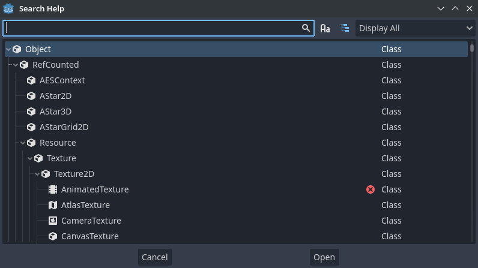
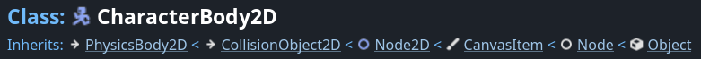
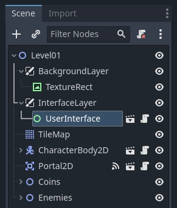

Learning new features
Godot is a feature-rich game engine. There is a lot to learn about it. This page explains how you can use the online manual, built-in code reference, and join online communities to learn new features and techniques.
Making the most of this manual
What you are reading now is the user manual. It documents each of the engine's concepts and available features. When learning a new topic, you can start by browsing the corresponding section of this website. The left menu allows you to explore broad topics while the search bar will help you find more specific pages. If a page exists for a given theme, it will often link to more related content.

The manual has a companion class reference that explains each Godot class's available functions and properties when programming. While the manual covers general features, concepts, and how to use the editor, the reference is all about using Godot's scripting API (Application Programming Interface). You can access it both online and offline. We recommend browsing the reference offline, from within the Godot editor. To do so, go to Help -> Search Help or press F1.

To browse it online, head to the manual's Class Reference section.
A class reference's page tells you:
Where the class exists in the inheritance hierarchy. You can click the top links to jump to parent classes and see the properties and methods a type inherits.

A summary of the class's role and use cases.
An explanation of the class's properties, methods, signals, enums, and constants.
Links to manual pages further detailing the class.
Note
If the manual or class reference is missing or has insufficient information, please open an Issue in the official godot-docs GitHub repository to report it.
You can hold Ctrl (macOS Cmd) and then mouseover text like the name of a class, property, method, signal, or constant to underline it, then Ctrl + Click (macOS Cmd + Click) it to jump to it.
Learning to think like a programmer
Teaching programming foundations and how to think like a game developer is beyond the scope of Godot's documentation. If you're new to programming, we recommend two excellent free resources to get you started:
GDQuest's Learn GDScript From Zero is a free and open source interactive tutorial for absolute beginners to learn to program with Godot's GDScript language. It is available as a desktop application or in the browser.
If you prefer books, check out the free ebook Automate The Boring Stuff With Python by Al Sweigart.
Learning with the community
Godot has a growing community of users. If you're stuck on a problem or need help to better understand how to achieve something, you can ask other users for help on one of the many active communities.
The best place to ask questions and find already answered ones is the official Godot Forum. These responses show up in search engine results and get saved, allowing other users to benefit from discussions on the platform. Once you have asked a question there, you can share its link on other social platforms. Before asking a question, be sure to look for existing answers that might solve your problem on this website or using your preferred search engine.
Asking questions well and providing details will help others answer you faster and better. When asking questions, we recommend including the following information:
Describe your goal. You want to explain what you are trying to achieve design-wise. If you are having trouble figuring out how to make a solution work, there may be a different, easier solution that accomplishes the same goal.
If there is an error involved, share the exact error message. You can copy the exact error message in the editor's Debugger bottom panel by clicking the Copy Error icon. Knowing what it says can help community members better identify how you triggered the error.
If there is code involved, share a code sample. Other users won't be able to help you fix a problem without seeing your code. Share the code as text directly. To do so, you can copy and paste a short code snippet in a chat box, or use a website like Pastebin to share long files.
Share a screenshot of your Scene dock along with your written code. Most of the code you write affects nodes in your scenes. As a result, you should think of those scenes as part of your source code.

Also, please don't take a picture with your phone, the low quality and screen reflections can make it hard to understand the image. Your operating system should have a built-in tool to take screenshots with the PrtSc (Print Screen) key (macOS: use Cmd + Shift + 3 for a full screen shot, more information here).
Alternatively, you can use a program like ShareX on Windows, or Flameshot on Windows/macOS/Linux.
Sharing a video of your running game can also be really useful to troubleshoot your game. You can use programs like OBS Studio and Screen to GIF to capture your screen.
You can then use a service like streamable or a cloud provider to upload and share your videos for free.
If you're not using the stable version of Godot, please mention the version you're using. The answer can be different as available features and the interface evolve rapidly.
Following these guidelines will maximize your chances of getting the answer you're looking for. They will save time both for you and the persons helping you.
Community tutorials
This manual aims to provide a comprehensive reference of Godot's features. Aside from the 2D and 3D getting started series, it does not contain tutorials to implement specific game genres. If you're looking for a tutorial about creating a role-playing game, a platformer, or other, please see Tutorials and resources, which lists content made by the Godot community.